Logos, wordmarks and headshots in ggplot2
Source:vignettes/articles/cookbook-ggplot-logos.Rmd
cookbook-ggplot-logos.RmdOn this page
Twelve short recipes for putting team logos, NFL wordmarks, player headshots and other images on ggplot2 charts: points, bar ends, axes, line ends, titles and tier lists, plus the sizing, overlap, past-season and export questions that come up along the way. Each recipe answers one “how do I …?” with real data from one season: NFL team stats from nflverse (nflreadr), NBA and men’s college basketball from hoopR, and the NHL from fastRhockey. Every loader reads a file the SportsDataverse publishes on GitHub, so nothing here calls a league’s own stats site.
library(sdvplotR)
library(ggplot2)
library(dplyr, warn.conflicts = FALSE)
nfl_season <- 2025 # nflverse names a season by the year it starts
season <- 2026 # the 2025-26 NBA, NHL and college basketball season, by the year it endsThe recipes share four small tables, each loaded once. NFL offense
and defense EPA per play come from nflverse’s weekly team stats (passes,
sacks and runs). For the NBA, ESPN’s team box score gives point
differential per game. Its regular season
(season_type == 2) also holds the All-Star games and the
NBA Cup final, which don’t count in the standings, so keep the games the
schedule marks as standard (type_abbreviation == "STD").
The NHL team box score is one row per team per game (02 in
the game id is the regular season). College teams carry ESPN team ids,
which team_reference() turns into sdvplotR’s abbreviations,
and hoopR’s standings give each team’s conference that season.
epa_per_play <- function(weeks) {
weeks <- mutate(weeks,
plays = attempts + sacks_suffered + carries,
epa = passing_epa + rushing_epa
)
offense <- summarise(weeks, off_epa = sum(epa) / sum(plays), .by = team)
defense <- weeks |>
mutate(team = opponent_team) |>
summarise(def_epa = sum(epa) / sum(plays), .by = team)
inner_join(offense, defense, by = "team") |> arrange(team)
}
nfl_weeks <- nflreadr::load_team_stats(nfl_season, summary_level = "week") |>
as.data.frame() |>
filter(season_type == "REG")
nfl_epa <- epa_per_play(nfl_weeks)
nba_regular <- hoopR::load_nba_schedule(season) |>
as.data.frame() |>
filter(season_type == 2, type_abbreviation == "STD") |>
pull(game_id)
nba_teams <- hoopR::load_nba_team_box(season) |>
as.data.frame() |>
filter(game_id %in% nba_regular) |>
summarise(
games = n(),
diff = mean(team_score - opponent_team_score),
.by = team_abbreviation
) |>
rename(team = team_abbreviation) |>
arrange(team)
nhl_games <- fastRhockey::load_nhl_team_box(season) |>
as.data.frame() |>
filter(substr(game_id, 5, 6) == "02") |>
mutate(team = clean_team_abbrs(team_abbrev, sport = "nhl"))
mbb_ref <- team_reference("mbb")
conferences <- hoopR::load_mbb_standings(season) |>
as.data.frame() |>
distinct(team_id = as.character(team_id), conference = group_name) |>
filter(conference != "College Basketball Crown") # a postseason event, not a league
mbb <- hoopR::load_mbb_ratings(season) |>
as.data.frame() |>
inner_join(conferences, by = "team_id") |>
mutate(team = mbb_ref$team_abbr[match(team_id, mbb_ref$espn_team_id)]) |>
filter(!is.na(team)) |>
arrange(team_id)
c(nfl = nrow(nfl_epa), nba = nrow(nba_teams), nhl = n_distinct(nhl_games$team), mbb = nrow(mbb))
#> nfl nba nhl mbb
#> 32 30 32 365
range(nba_teams$games) # 82 each once the extra games are gone
#> [1] 82 821. Use logos as scatter points
geom_sdv_logos() draws each team’s logo centred on its
x and y. width is a share of the
panel (0.065 is about a fifteenth of it), so logos keep their size
relative to the plot at any figure size. geom_mean_lines()
draws a dashed line at the mean of x0 and of
y0, which splits the chart into quadrants.
ggplot(nfl_epa, aes(x = off_epa, y = def_epa)) +
geom_mean_lines(aes(x0 = off_epa, y0 = def_epa), colour = "grey50") +
geom_sdv_logos(aes(team = team), sport = "nfl", width = 0.065) +
scale_x_continuous(expand = expansion(mult = 0.08)) + # room for the edge logos
scale_y_reverse(expand = expansion(mult = 0.08)) + # good defense at the top
labs(
title = "NFL offense vs defense, 2025 regular season",
subtitle = "EPA per play on passes, sacks and runs; lines at the league mean",
x = "Offense: EPA per play",
y = "Defense: EPA per play allowed",
caption = "Data: nflreadr::load_team_stats()"
) +
theme_minimal()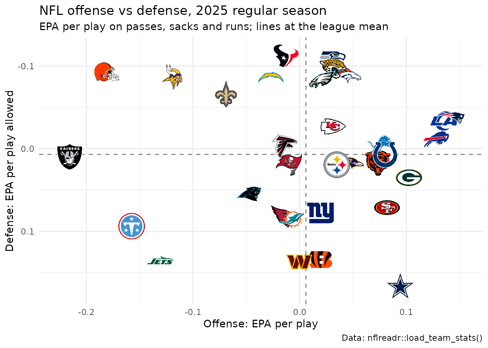
Logos are drawn past the point they sit on, so pad both scales
(expansion()) or the logos at the edges are clipped.
geom_median_lines() takes the same aesthetics and draws the
medians instead.
2. Put a logo at the end of each bar
Lay the bars out horizontally so thirty teams have room, then place
each logo just past its bar’s end: right of a positive bar, left of a
negative one. scale_fill_sdv() fills each bar in its team’s
primary color. height sizes the logo here, since each row
is about a thirtieth of the panel tall.
ranked <- nba_teams |>
arrange(diff, desc(team)) |>
mutate(
team_f = factor(team, levels = team),
logo_x = diff + if_else(diff >= 0, 1, -1)
)
ggplot(ranked, aes(x = diff, y = team_f)) +
geom_col(aes(fill = team), width = 0.75) +
geom_vline(xintercept = 0, colour = "grey30") +
geom_sdv_logos(aes(x = logo_x, team = team), sport = "nba", height = 0.028) +
scale_fill_sdv(sport = "nba") +
scale_x_continuous(expand = expansion(add = 2)) +
labs(
title = "NBA point differential, 2025-26 regular season",
x = "Average point differential per game", y = NULL,
caption = "Data: hoopR::load_nba_team_box()"
) +
theme_minimal() +
theme(axis.text.y = element_blank(), panel.grid.major.y = element_blank())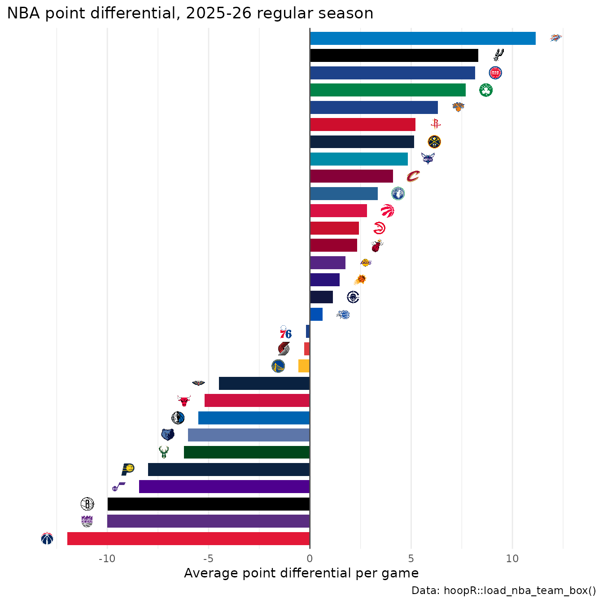
Order the factor with a tiebreaker (here the team name) so two teams with the same value keep the same order every time the chart is rebuilt.
3. Swap axis labels for logos or wordmarks
There are two ways. scale_x_sdv() turns a team axis’s
labels into image tags (size in pixels) and
theme_x_sdv() renders them (it needs the ggtext
package):
nhl_scoring <- nhl_games |>
summarise(gpg = mean(goals), .by = team) |>
arrange(desc(gpg), team) |>
slice_head(n = 10)
ggplot(nhl_scoring, aes(x = factor(team, levels = team), y = gpg)) +
geom_col(aes(fill = team), width = 0.7) +
geom_text(aes(label = sprintf("%.2f", gpg)), vjust = -0.4, size = 3.2) +
scale_x_sdv(sport = "nhl", size = 26) +
scale_fill_sdv(sport = "nhl") +
scale_y_continuous(expand = expansion(mult = c(0, 0.08))) +
labs(
title = "NHL goals per game, 2025-26 regular season (top 10)",
x = NULL, y = "Goals per game",
caption = "Data: fastRhockey::load_nhl_team_box()"
) +
theme_minimal() +
theme_x_sdv()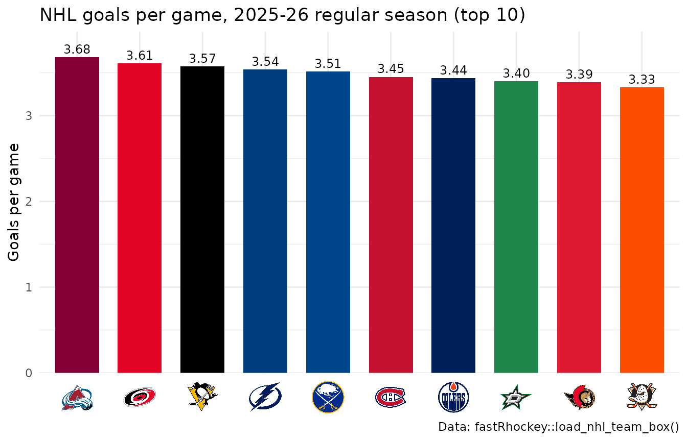
Or keep the plain scale and set the axis text to an image element:
element_sdv_logo(), or element_sdv_wordmark()
for the NFL, the only league with wordmarks, on axis.text.y
(or axis.text.x), after the complete theme.
size is in centimetres along the image’s longer side, so a
wide wordmark needs a bigger value than a square logo.
nfl_sacks <- nfl_weeks |>
summarise(sacks = sum(def_sacks), .by = team) |>
arrange(desc(sacks), team) |>
slice_head(n = 10)
ggplot(nfl_sacks, aes(x = sacks, y = factor(team, levels = rev(team)))) +
geom_col(aes(fill = team), width = 0.7) +
scale_fill_sdv(sport = "nfl") +
labs(
title = "NFL sacks, 2025 regular season (top 10)",
x = "Sacks", y = NULL,
caption = "Data: nflreadr::load_team_stats()"
) +
theme_minimal() +
theme(axis.text.y = element_sdv_wordmark(sport = "nfl", size = 2.2))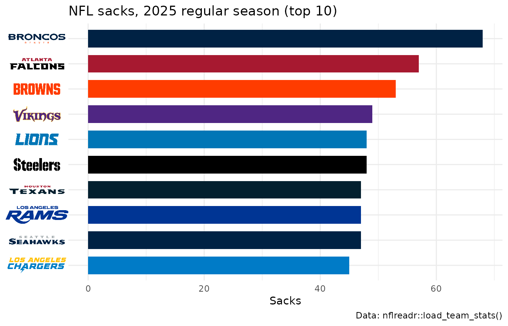
scale_y_sdv() with theme_y_sdv() does the
same for a y axis; image labels follow the factor levels, so set the
order before the scale sees it.
4. Label each line’s last point with a logo
A logo at the end of a line replaces a legend. Leave room on the right, then put each logo a little past the team’s last game. Teams that finish close together would stack their logos, so walk up the finishing order and keep each logo at least one logo height above the one below, with a thin leader line back to its point. The Pacific Division’s season, as cumulative goal differential:
ref_nhl <- team_reference("nhl")
pacific <- ref_nhl$team_abbr[ref_nhl$division == "Pacific"]
runs <- nhl_games |>
filter(team %in% pacific) |>
arrange(team, game_date, game_id) |>
mutate(
game_no = row_number(),
goal_diff = cumsum(goals - goals_against),
.by = team
)
last <- runs |>
slice_max(game_no, n = 1, by = team) |>
arrange(goal_diff, team)
gap <- 9 # goals: about one logo height on this axis
last$spot <- Reduce(function(below, y) max(y, below + gap), last$goal_diff, accumulate = TRUE)
end <- max(last$game_no)
ggplot(runs, aes(x = game_no, y = goal_diff)) +
geom_hline(yintercept = 0, colour = "grey60") +
geom_line(aes(colour = team), linewidth = 0.9) +
geom_segment(
aes(x = game_no, xend = end + 3, y = goal_diff, yend = spot),
data = last, colour = "grey60", linewidth = 0.3
) +
geom_sdv_logos(aes(x = end + 6, y = spot, team = team), data = last, sport = "nhl", height = 0.07) +
scale_colour_sdv(sport = "nhl") +
scale_x_continuous(limits = c(0, end + 9), breaks = seq(0, 80, 20)) +
labs(
title = "The Pacific Division's 2025-26 season",
x = "Game", y = "Cumulative goal differential",
caption = "Data: fastRhockey::load_nhl_team_box()"
) +
theme_minimal()
gap is in data units, so set it from the y range: about
a twelfth of it works for a logo height of 0.07.
5. Size and fade logos to highlight a group
width, height and alpha are
aesthetics, so set them per layer (or map them). Two layers: the league
faded and small, then the AFC West large and opaque on top.
afc_west <- c("DEN", "KC", "LAC", "LV")
ggplot(nfl_epa, aes(x = off_epa, y = def_epa)) +
geom_sdv_logos(
aes(team = team),
data = filter(nfl_epa, !team %in% afc_west),
sport = "nfl", width = 0.05, alpha = 0.25
) +
geom_sdv_logos(
aes(team = team),
data = filter(nfl_epa, team %in% afc_west),
sport = "nfl", width = 0.1
) +
scale_x_continuous(expand = expansion(mult = 0.1)) +
scale_y_reverse(expand = expansion(mult = 0.08)) +
labs(
title = "The AFC West against the league, 2025",
x = "Offense: EPA per play", y = "Defense: EPA per play allowed",
caption = "Data: nflreadr::load_team_stats()"
) +
theme_minimal()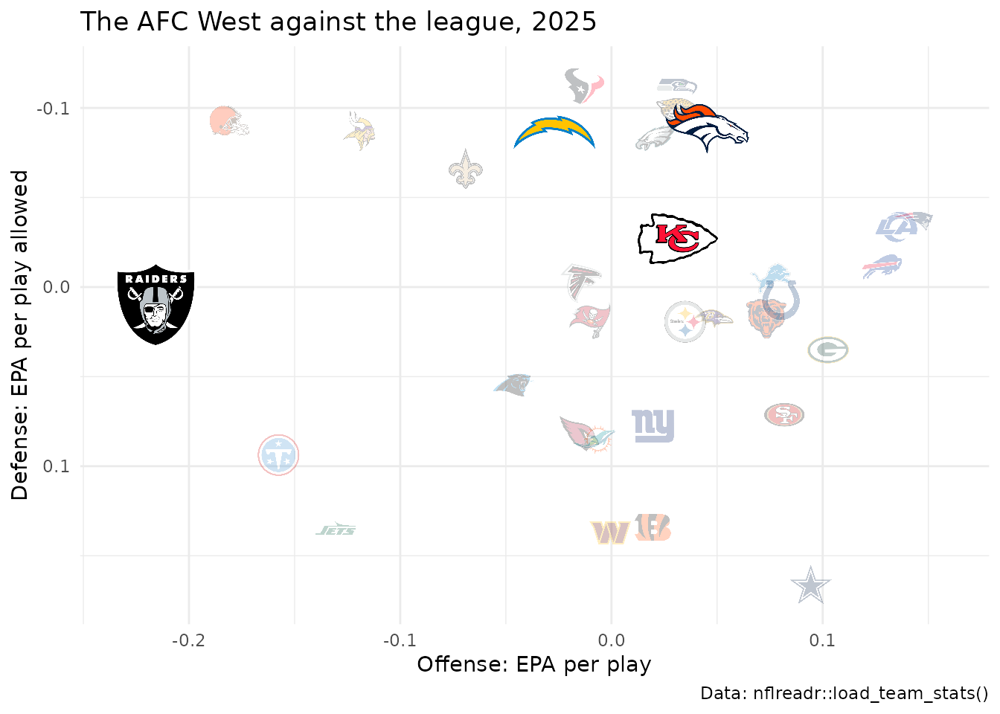
colour = "b/w" turns logos grey instead of fading them,
which reads better on a dark background.
6. Keep overlapping logos readable
Logos are drawn in row order, so the last row ends on top. On the
left, the Big Ten in the data’s order (by ESPN team id) at a large
width: logos pile up and whichever row comes last covers
the rest. On the right, sorting weakest to strongest puts the stronger
team on top of every overlap, and a smaller width cuts the
overlap.
big_ten <- filter(mbb, conference == "Big Ten Conference")
panels <- bind_rows(
mutate(big_ten, panel = "Data order, width 0.13", w = 0.13),
mutate(arrange(big_ten, adj_em, team), panel = "Best drawn last, width 0.09", w = 0.09)
) |>
mutate(panel = factor(panel, levels = unique(panel)))
ggplot(panels, aes(x = adj_o, y = adj_d)) +
geom_sdv_logos(aes(team = team, width = w), sport = "mbb") +
facet_wrap(~panel) +
scale_x_continuous(expand = expansion(mult = 0.1)) +
scale_y_reverse(expand = expansion(mult = 0.08)) +
labs(
title = "Big Ten adjusted efficiency, 2025-26",
x = "Adjusted offense (points per 100 possessions)",
y = "Adjusted defense (points allowed per 100)",
caption = "Data: hoopR::load_mbb_ratings()"
) +
theme_minimal()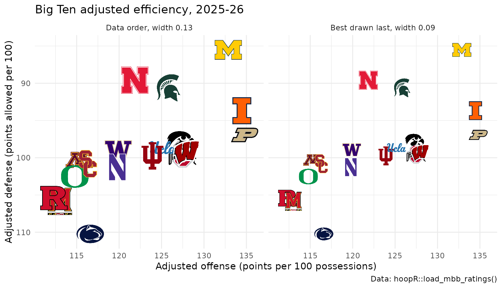
For a single team that must stay visible, give it its own
geom_sdv_logos() layer after the rest.
7. Show the logo a team wore that season
The season aesthetic picks the mark a team wore that
year. nflverse files past seasons under today’s codes (LA,
LAC), but a code finds only its own identity’s marks, so
pass the old one: "STL" and "SD" bring back
the St. Louis and San Diego logos of 2012. Teams with no older mark in
sdvplotR’s archive keep today’s.
epa_2012 <- nflreadr::load_team_stats(2012, summary_level = "week") |>
as.data.frame() |>
filter(season_type == "REG") |>
epa_per_play() |>
mutate(key = recode(team, LA = "STL", LAC = "SD"))
# the two sit side by side, so label St. Louis to the right and San Diego to the left
moved <- filter(epa_2012, key %in% c("STL", "SD")) |>
mutate(
label = if_else(key == "STL", "St. Louis", "San Diego"),
label_x = off_epa + if_else(key == "STL", 0.03, -0.03),
hjust = if_else(key == "STL", 0, 1)
)
ggplot(epa_2012, aes(x = off_epa, y = def_epa)) +
geom_sdv_logos(
aes(team = key),
data = filter(epa_2012, !key %in% c("STL", "SD")),
sport = "nfl", season = 2012, width = 0.05, alpha = 0.3
) +
geom_sdv_logos(aes(team = key), data = moved, sport = "nfl", season = 2012, width = 0.09) +
geom_text(aes(x = label_x, label = label, hjust = hjust), data = moved, fontface = "bold") +
scale_x_continuous(expand = expansion(mult = 0.08)) +
scale_y_reverse(expand = expansion(mult = 0.08)) +
labs(
title = "NFL offense vs defense, 2012 regular season",
x = "Offense: EPA per play", y = "Defense: EPA per play allowed",
caption = "Data: nflreadr::load_team_stats()"
) +
theme_minimal()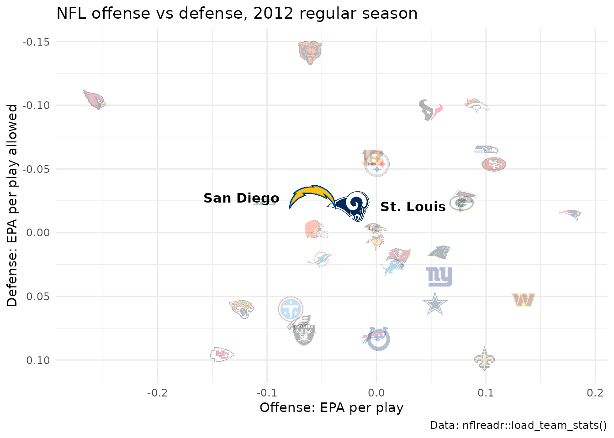
The NHL has every club’s marks since 1917-18, keyed by the NHL code
of that identity ("QUE", "HFD",
"ATL"), with season as the ending year.
8. Put a logo beside the title
ggtitle_image() sets the title with a team’s logo (or
any image URL) beside it, and theme_title_image() renders
it with the image centred on the words. image_height is in
pixels; a logo taller than the text opens up the title line around it.
Add theme_title_image() after any other
plot.title setting, since a later one replaces it. The
Super Bowl champion’s offense, week by week:
sea <- nfl_weeks |>
filter(team == "SEA") |>
mutate(epa = (passing_epa + rushing_epa) / (attempts + sacks_suffered + carries)) |>
arrange(week)
good <- unname(sdv_team_colors("nfl", "SEA", type = "primary"))
bad <- unname(sdv_team_colors("nfl", "SEA", type = "secondary"))
bye <- setdiff(seq_len(max(sea$week)), sea$week)
ggplot(sea, aes(x = week, y = epa)) +
geom_col(aes(fill = if_else(epa >= 0, "good", "bad")), colour = "black", linewidth = 0.2) +
geom_hline(yintercept = 0) +
scale_fill_manual(values = c(good = good, bad = bad), guide = "none") +
scale_x_continuous(breaks = sea$week, labels = sea$opponent_team) +
ggtitle_image(
title_image = "SEA",
title = "Seahawks offense, week by week, 2025",
subtitle = paste("EPA per play by opponent; bye in week", bye),
image_height = 22,
sport = "nfl"
) +
labs(x = NULL, y = "Offense EPA per play", caption = "Data: nflreadr::load_team_stats()") +
theme_minimal() +
theme_title_image(size = 15, face = "bold") +
theme(panel.grid.major.x = element_blank(), axis.text.x = element_text(size = 7))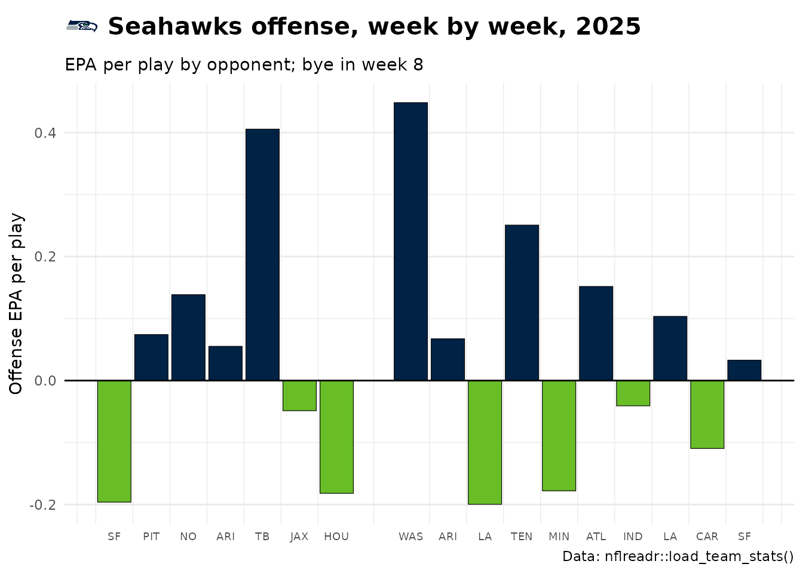
image_side = "right" moves the logo after the text.
9. Build a tier list
sdv_team_tiers() takes a frame with team
and tier_no (1 on top) and returns a finished ggplot;
tier_desc names the tiers. NBA teams tiered by point
differential:
tiers <- nba_teams |>
arrange(desc(diff), team) |>
mutate(tier_no = case_when(
diff >= 6 ~ 1,
diff >= 2 ~ 2,
diff >= -2 ~ 3,
diff >= -6 ~ 4,
.default = 5
))
sdv_team_tiers(
tiers,
sport = "nba",
title = "NBA tiers, 2025-26",
subtitle = "By average point differential per game",
caption = "Data: hoopR::load_nba_team_box()",
tier_desc = c(
"1" = "+6 or better", "2" = "+2 to +6", "3" = "-2 to +2",
"4" = "-6 to -2", "5" = "Below -6"
)
)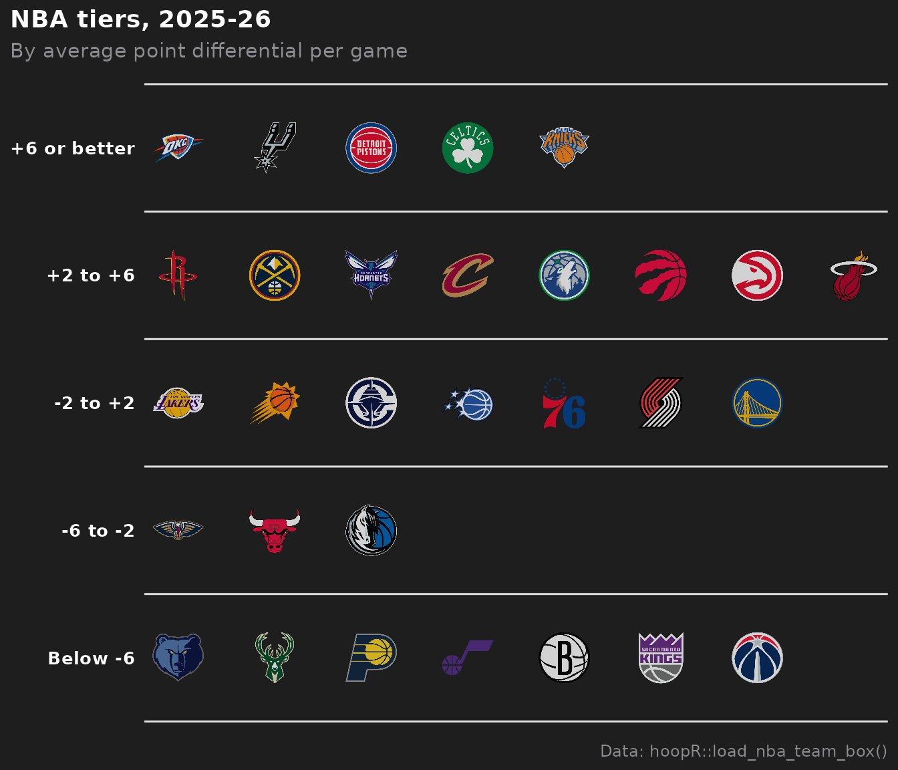
Teams keep the frame’s order within a tier, so sort it first (here
best first); presort = TRUE sorts them alphabetically
instead.
10. Place any image: conference logos
geom_from_path() (from ggpath, re-exported by sdvplotR)
draws any picture from a URL or local file, with the same
width, height and alpha.
Conferences are rows in
team_reference(include_conferences = TRUE), and
sdv_logo_url() resolves their names to their logos (the
SportsDataverse logo archive’s copies of ESPN’s marks). The ten
conferences whose average team is strongest, by adjusted efficiency
margin:
conf_names <- team_reference("mbb", include_conferences = TRUE) |>
filter(type == "conference") |>
pull(team_name)
conf <- mbb |>
summarise(adj_em = mean(adj_em), teams = n(), .by = conference) |>
filter(conference %in% conf_names) |>
mutate(logo_url = sdv_logo_url(conference, sport = "mbb")) |>
arrange(desc(adj_em), conference) |>
slice_head(n = 10) |>
mutate(label = sub(" Conference$", "", conference)) |>
mutate(label = factor(label, levels = rev(label)))
ggplot(conf, aes(x = adj_em, y = label)) +
geom_col(fill = "#4a6fa5", width = 0.6) +
geom_from_path(aes(x = adj_em + 2, path = logo_url), height = 0.08) +
scale_x_continuous(expand = expansion(mult = c(0, 0.1))) +
labs(
title = "How strong is the average team? Ten conferences, 2025-26",
x = "Average adjusted efficiency margin (points per 100 possessions)", y = NULL,
caption = "Data: hoopR::load_mbb_ratings(), hoopR::load_mbb_standings(); logos: ESPN via the SportsDataverse archive"
) +
theme_minimal() +
theme(panel.grid.major.y = element_blank(), plot.title.position = "plot")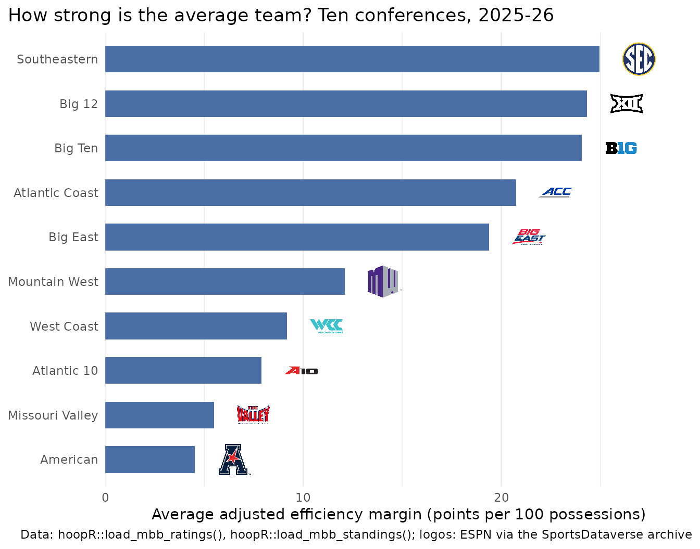
height fixes every image’s height, so a wide mark (the
ACC’s) comes out smaller than a round one; pick width
instead when the images are tall. element_sdv_raster() puts
one image behind the whole plot, such as a watermark in
plot.background.
11. Put headshots on a scatter
geom_sdv_headshots() works like
geom_sdv_logos() with a player_id aesthetic:
an ESPN athlete id for every league but the NFL (which takes GSIS ids),
as in hoopR’s player box score. The season’s top scorers (50+ games), by
volume and efficiency:
players <- hoopR::load_nba_player_box(season) |>
as.data.frame() |>
filter(game_id %in% nba_regular, !did_not_play)
scorers <- players |>
summarise(
games = n(),
ppg = mean(points),
ts = sum(points) / (2 * (sum(field_goals_attempted) + 0.44 * sum(free_throws_attempted))),
.by = c(athlete_id, athlete_display_name)
) |>
filter(games >= 50) |>
arrange(desc(ppg), athlete_id) |>
slice_head(n = 10) |>
mutate(last_name = sub("^\\S+\\s+", "", athlete_display_name))
ggplot(scorers, aes(x = ppg, y = ts)) +
geom_sdv_headshots(aes(player_id = athlete_id), sport = "nba", height = 0.12) +
geom_label(aes(label = last_name), vjust = 2.6, size = 3, linewidth = 0, alpha = 0.8) +
scale_x_continuous(expand = expansion(mult = 0.1)) +
scale_y_continuous(labels = scales::label_percent(accuracy = 1), expand = expansion(mult = 0.15)) +
labs(
title = "The NBA's top scorers, 2025-26: volume vs efficiency",
x = "Points per game", y = "True shooting %",
caption = "Data: hoopR::load_nba_player_box(); headshots: ESPN"
) +
theme_minimal()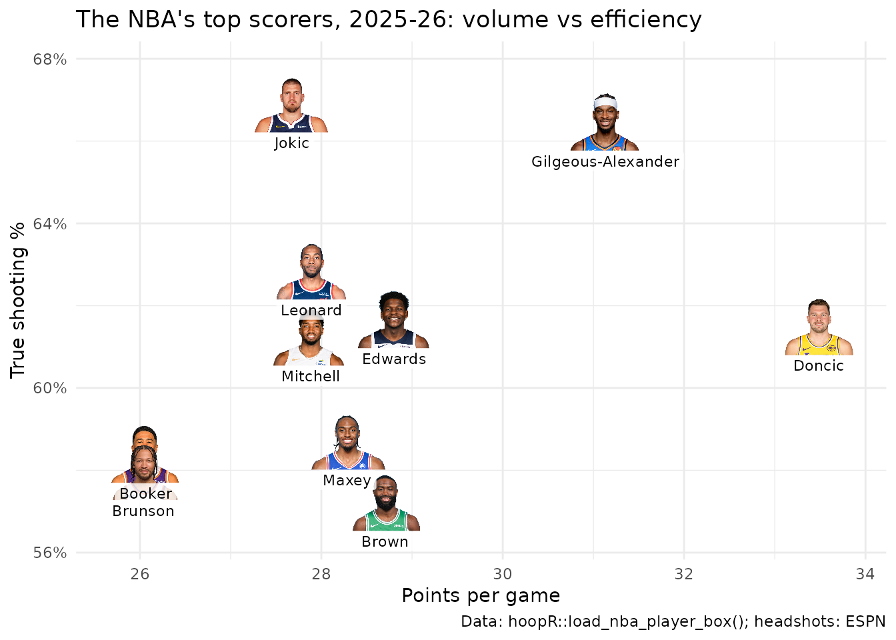
The label sits below each headshot with vjust, which is
in label heights, so it stays put if you resize the figure.
12. Save at social media sizes
Pick the pixel size, then set width and
height in inches at a matching dpi: 7.2 x 7.2
in at 150 dpi is 1080 x 1080 px (square), 8 x 4.5 in is 1200 x 675 px (a
landscape card). Logos are sized as a share of the panel, so they scale
with the canvas and nothing needs resizing. Set bg so the
transparent corners of a saved theme come out white.
p <- ggplot(nfl_epa, aes(x = off_epa, y = def_epa)) +
geom_mean_lines(aes(x0 = off_epa, y0 = def_epa), colour = "grey50") +
geom_sdv_logos(aes(team = team), sport = "nfl", width = 0.065) +
scale_y_reverse() +
labs(
title = "NFL offense vs defense, 2025",
x = "Offense: EPA per play", y = "Defense: EPA per play allowed",
caption = "Data: nflreadr::load_team_stats()"
) +
theme_minimal()
out <- tempfile("social-")
dir.create(out)
sizes <- list(square = c(1080, 1080), landscape = c(1200, 675))
for (name in names(sizes)) {
px <- sizes[[name]]
ggsave(file.path(out, paste0(name, ".png")), p,
width = px[1] / 150, height = px[2] / 150, dpi = 150, bg = "white"
)
}
saved <- magick::image_info(magick::image_read(file.path(out, paste0(names(sizes), ".png"))))
data.frame(file = names(sizes), width = saved$width, height = saved$height)
#> file width height
#> 1 square 1080 1080
#> 2 landscape 1200 675For the same pixel size, a higher dpi makes text and
lines larger relative to the canvas (their sizes are in points) and a
lower one smaller; logos stay the same share of the panel either
way.